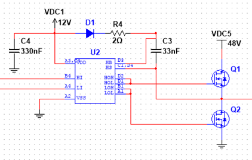

Circuit Layout of the Inverter
The traction inverter is a critical component of this design. It converts DC power from the vehicle’s onboard batteries into AC power that can be used to drive the main motor. For this application, it must generate a 3-phase PWM signal that can be sent to the motor. It also must be able to interpret the motor’s resolver in order to provide the required power at specific times. The ability to tolerate high voltages and currents is necessary for this system to function. Silicon Carbide MOFSETs were chosen rather than IGBTs for this design due to their greater thermal conductivity, minimal switching loss, lower heat generation, and more compact design. This design can also be scaled up for future projects as necessary.
Simulation of the MOSFET Driver Circuit
Our inverter design will use several voltage levels. The High Voltage will be created with four 12V lead acid batteries generating a nominal 48V which is used for the high-current drive of the motor windings. This voltage will range from 40VDC when discharged to 57.6VDC while charging so we’ll accommodate for that in our component selection. In order to quickly activate the MOSFETs, we’ll use a separate 12V lead acid battery to power the MOSFET gate drivers and activate the MOSFET gates. It will also provide the 3.3V and 5V Power Supply to power our Microcontrollers and our throttle circuit by stepping down the voltage and limiting current with buck converters.